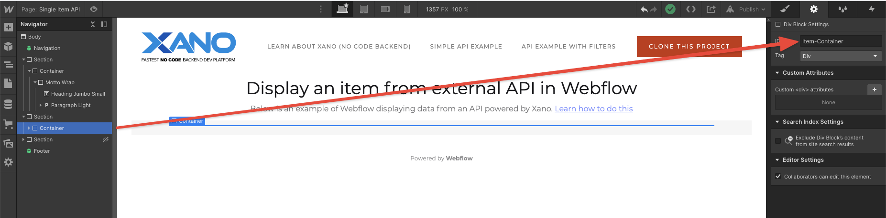
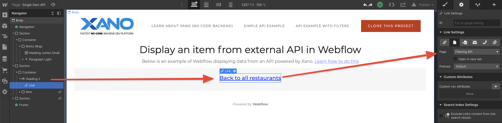
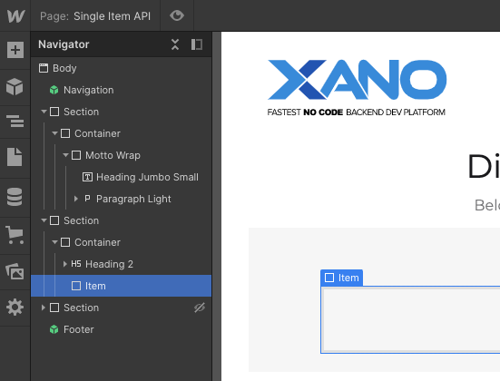
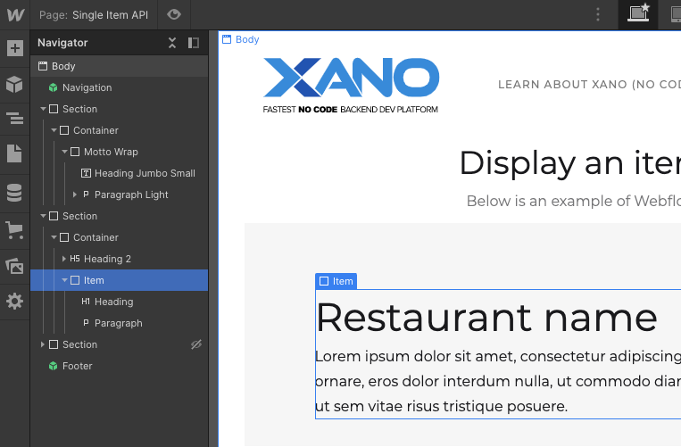
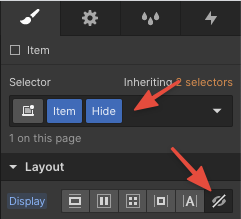
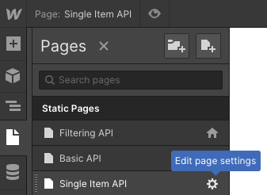
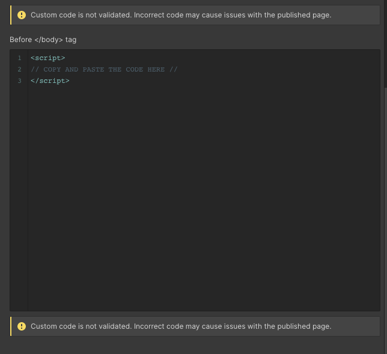

Step by Step tutorial
In this example, we’ll use a restaurant API endpoint Built and hosted by Xano
and display the individual item or restaurant that was clicked on from the list of restaurants being presented in the previous screen. We'll create a simple header and image that displays the name and description.
STEP 1 In Webflow, create a page and select an Element (like a Div) that you want the API item displayed in. In this example, we’ll create a Div and set the ID as Item-Container

STEP 2 Create an element inside Item-Container that you can link to go back to the list of Items (restaurants). In this case I created an H5 that says "Back to all restaurants".

STEP 3 Create another Div inside the Item-Container Div. We'll add class to it called Item. This will be the example style that we’ll use to load the API endpoint result item into.

STEP 4 In the Item Div, add an Heading (H1) and Paragraph element (P). You can style it the way you want.

STEP 5 After you’re done styling add a Hide class to the Item Div and set the display to hidden. Because we don’t want the text to always show up on the page, we just want to use it style how item looks when the Javascript loads the API.

With your Sample card in place and hidden in the Webflow designer, it’s time to add the Javascript to your page settings!

STEP 7 So now you can copy the Javascript code contained in the Github link below into the Before tag section. With this, Javascript tells Webflow how to inject the data from an API endpoint you give onto the page, and I walk through the Javascript in the video above in case you’d like to learn how it works.
NOTE: Make sure the code sits in between the <script> </script> tag. If they don't exist, create it.
Gitlab link to Javascript code

That’s it! So now you can save the page and publish. If you’ve done everything properly, you should see a preview of data being listed in cards below.